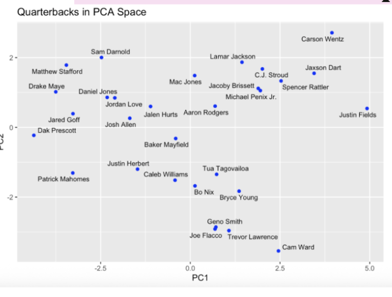
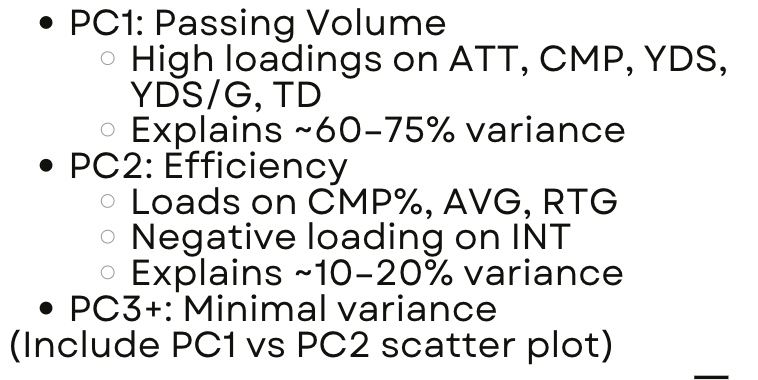
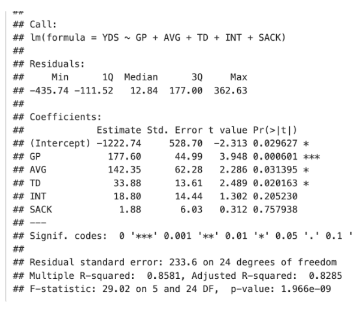

Applying Linear Algebra to NFL Quarterback Performance

One thing I increasingly like about applied mathematics is that it helps you understand systems. And to be honest, as an Ecuadorian first-generation American, one system that I had yet to really learn about was football. So to try to understand football, I wanted needed to condense my confusion into one question about:
What actually explains quarterback performance?
At first glance, NFL passing statistics were just completion percentage, touchdowns, sacks, passer rating, yards per game, attempts, interceptions — every metric seems to measure something slightly different while also overlapping with everything else.
Linear algebra gave us a way to organize this complexity.
The Core Idea
The first-principles intuition behind PCA is surprisingly simple:
If many variables move together, then the system may secretly be lower-dimensional than it appears.
In football terms, quarterbacks who throw for many yards also usually have:
- More pass attempts
- More completions
- More touchdowns
- Higher yards per game
Those variables are not independent. They partially encode the same underlying phenomenon: passing volume.
PCA let us mathematically uncover those hidden structures by transforming correlated variables into principal components that maximize explained variance.

Why We Chose PCA for this
One of the biggest constraints in the project was dimensionality relative to sample size.
We only analyzed the top 30 quarterbacks from the 2025 season, but we had many statistical variables. With smaller datasets, correlated predictors can make interpretation unstable and noisy.
PCA helped solve that problem by compressing the data into a smaller number of interpretable axes.
What surprised me most was how low-dimensional quarterback performance actually was. Two principal components explained most of the variance:
- Passing volume
- Passing efficiency
The system looked complex at first, but mathematically it collapsed into a much simpler structure.
Least Squares & Constraints
For prediction, we used least squares regression to estimate total passing yards.
Initially, we included variables like completions and attempts directly in the model. But this introduced multicollinearity because those variables were nearly linearly dependent.
From a linear algebra perspective, the matrix was becoming close to singular.
The model was technically solvable, but geometrically unstable.
So we removed redundant predictors to restore invertibility and reduce variance inflation.

What I Would Do Differently
Looking back, I think the biggest limitation was treating quarterback statistics as static rather than temporal.
NFL performance evolves week-to-week through injuries, defensive schemes, weather, coaching adjustments, and opponent strength. A more advanced version of this project would model quarterback performance dynamically through time-series methods rather than single-season aggregates.
I would also incorporate:
- Regularization methods like ridge regression
- Opponent-adjusted efficiency metrics
- Bayesian uncertainty estimates
- Play-by-play sequential data
What This Project Actually Taught Me
More than football, this project changed how I think about systems.
Many real-world systems appear overwhelmingly high-dimensional on the surface. But often, underneath the noise, there are a few hidden structures driving most of the behavior.
Linear algebra is ultimately the study of hidden structure.